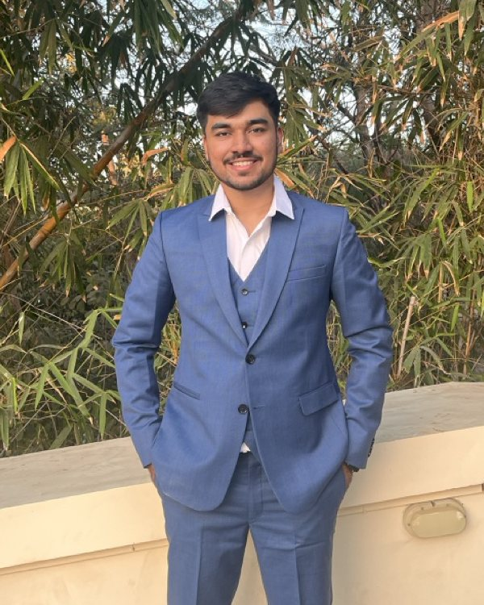

Vivek Chaudhari. Engineer and founder.
Based in San Francisco. M.S. Computer Science student at Northeastern University (Khoury College), most recently on the founding team at Context Labs, and founder of Quantum AI Solutions.

Where AI capability meets real systems.
I work on the parts of AI that decide whether a model is useful in practice: inference performance, RL post-training, and the agent infrastructure that ships to enterprise customers.
On the inference side, that means building a paged KV cache and a continuous batching scheduler from scratch to understand where throughput actually comes from. On the training side, it means implementing GRPO by hand and reading training dynamics closely enough to catch reward hacking. On the product side, it means sitting with enterprise customers, turning their scattered tools into permission-aware context, and getting agents to production in weeks.
Founder of Quantum AI Solutions.
Quantum AI Solutions is my company. Its product, Blastr AI, runs the outbound funnel for paying enterprise clients: sequences, AI voice calls in English, Hindi, and Gujarati, live intent classification, and handoff to WhatsApp with a purchase link.
Running it taught me to treat latency, reliability, and evaluation as product features. A voice agent that pauses too long or mishears a language switch loses the sale.
Capability and safety, together.
My long-term goal is to work at a frontier AI lab, at the intersection of capability and safety. The systems I have built so far point the same way: making models stronger is only half the job, and the other half is making their behavior measurable, auditable, and controllable.
Golden-dataset eval gates, human-in-the-loop guardrails, auditable execution traces, and watching for reward hacking are the habits I want to bring to that work.